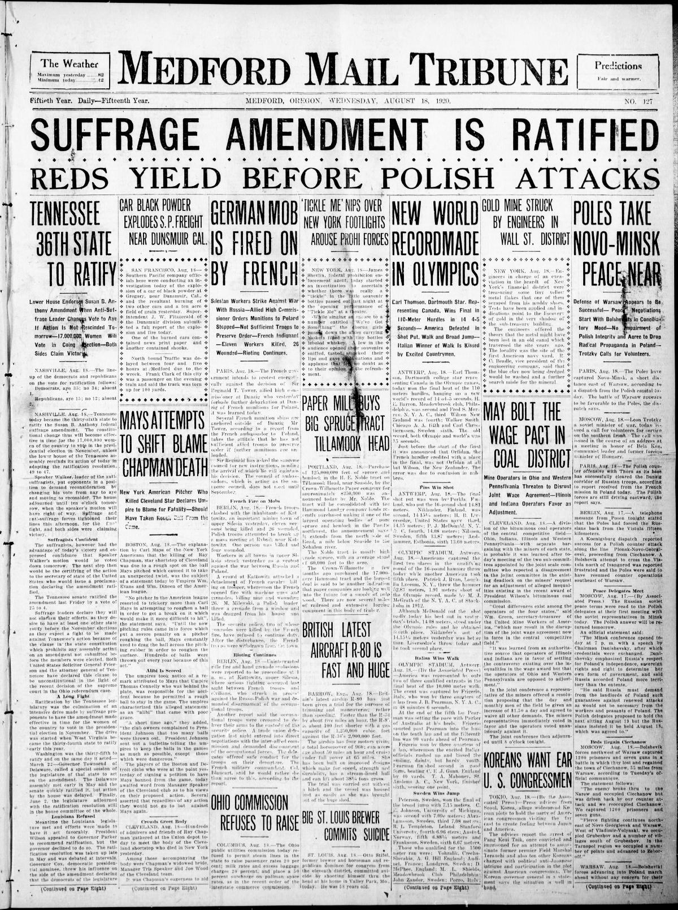
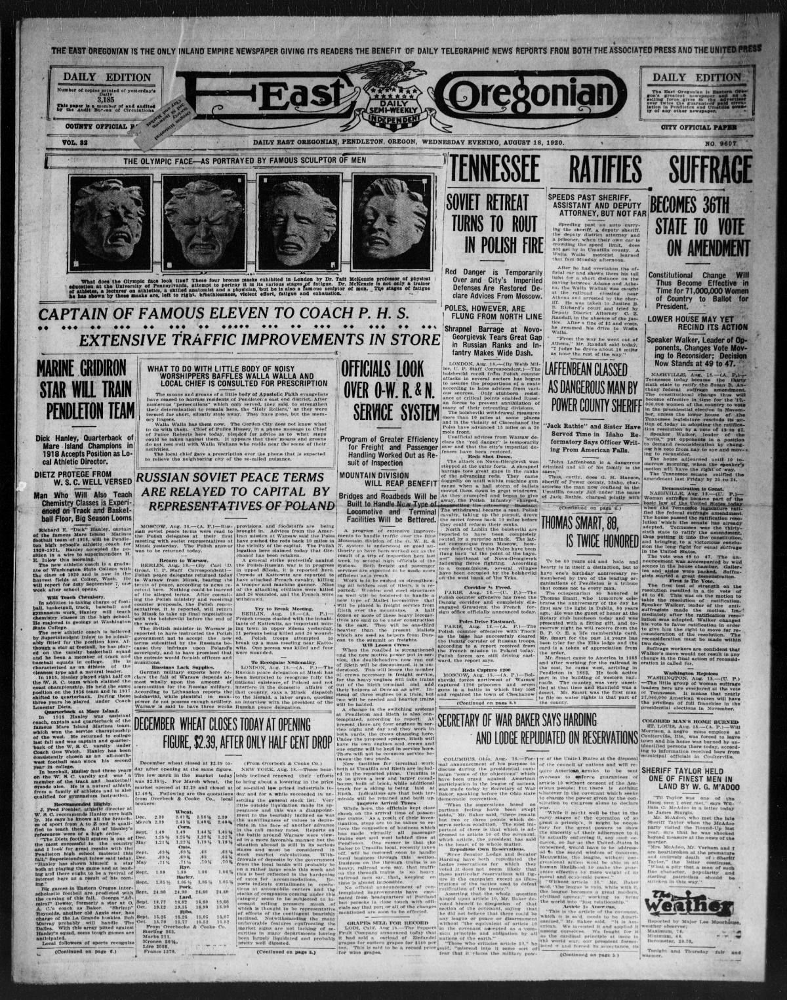
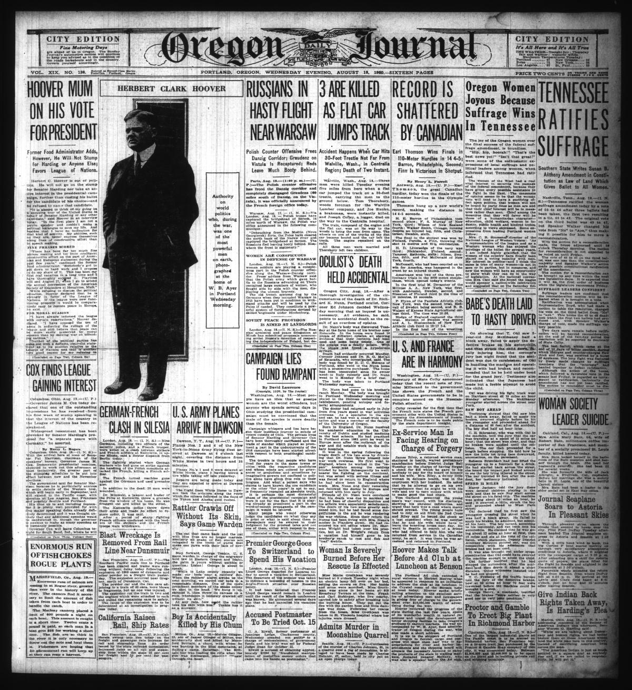
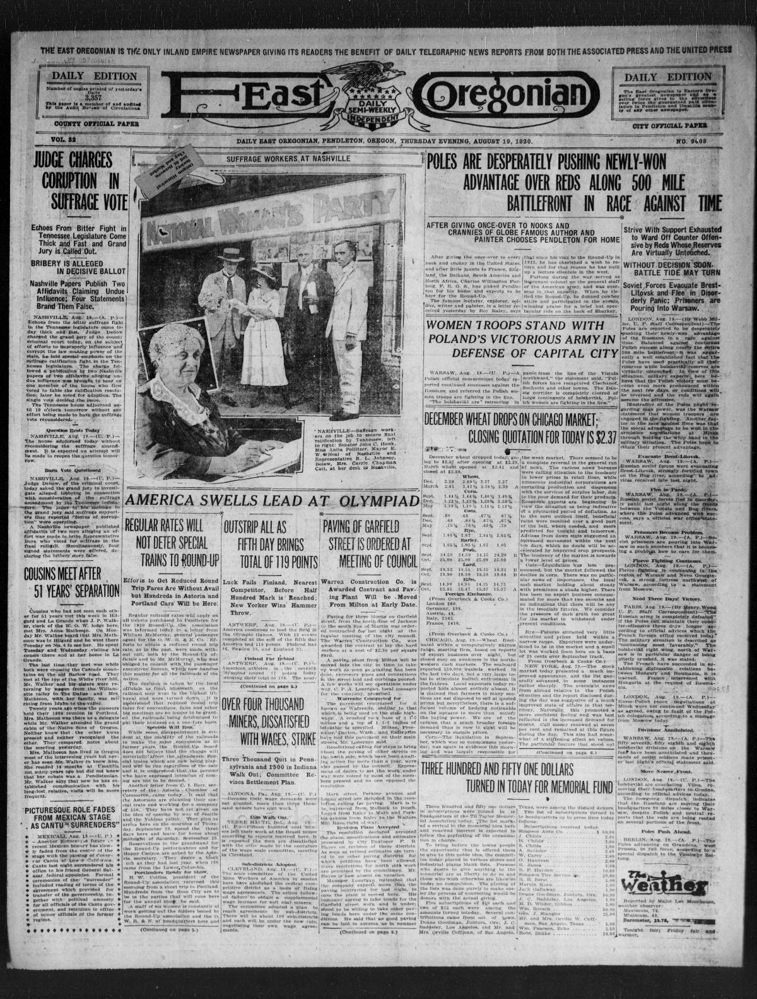

HN HN-421 · August 18, 1920 · Civil Rights & Social Change > Women's Rights & Suffrage > Voting rights
Source: Indianapolis Times, p. 1 — original page; National Archives history.
Report: A front-page headline announced that the Tennessee legislature had ratified women's suffrage, completing the required three-fourths of state approvals.
Assessment: August 18 was the decisive ratification date; the federal proclamation followed on August 26 (HN-422). The constitutional prohibition on sex-based voting exclusion did not by itself remove racial disenfranchisement, citizenship exclusions, and other barriers women faced in practice.
Authentic scans retrieved from Historic Oregon Newspapers (University of Oregon). Article crops are located using the archive's own OCR word coordinates and rendered at native crop resolution; page scans are reduced-size access renditions. No images were generated, mocked, or retouched.




Not yet acquired. Queued for provider-specific acquisition testing (see source-acquisition manifest).
URL (preserved verbatim): https://newspapers.library.in.gov/?a=d&d=IPT19200818.1.1
Saved research report: Historical_Newspaper_Event_Research_403-427_2026-10-23.md
Evidence note: A newspaper report means a historical publication made a claim; it does not establish that claim as fact. Contemporary reporting is separated from later scholarly context and our own assessment.